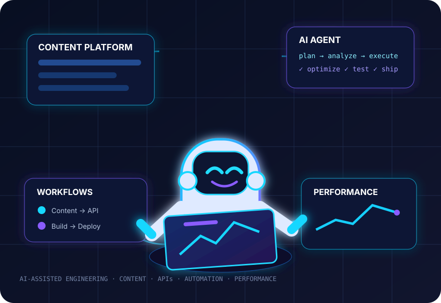
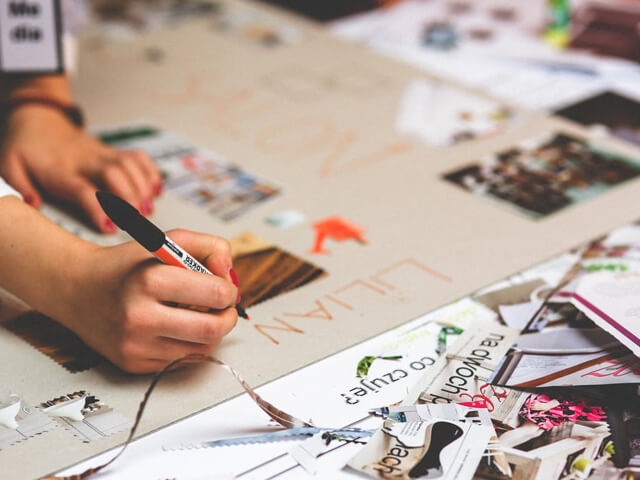
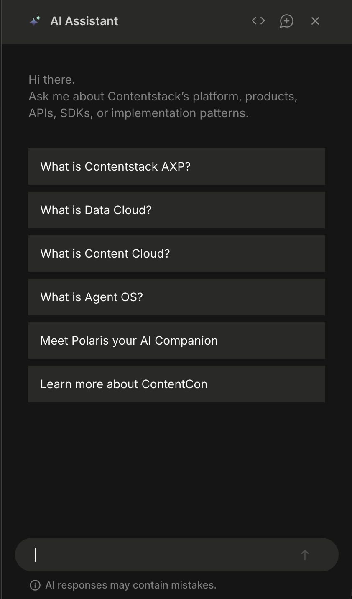

Technical Leadership
Solution planning, technical design, code review, stakeholder alignment, mentoring and engineering execution.
Senior Software Engineer II · Technical Lead
11+ years of experience building developer platforms, documentation experiences and high-performance digital products. Technical Lead and Senior Software Engineer II focused on modern web architecture, AI-powered solutions, developer experience and engineering excellence — from technical strategy and implementation to production releases and continuous improvement.
Based in Mumbai, India · Frontend · Full-Stack · Web Platform
I build and improve web experiences where engineering quality, developer experience and business outcomes meet. My work spans architecture, UI engineering, performance, SEO, accessibility, CI/CD, production readiness and release management.
As a Technical Lead / Team Lead, I drive solution planning, technical design, code reviews, root-cause analysis, cross-functional execution and mentoring — while staying close to the code.
End-to-end technical ownership from planning and implementation through release and continuous improvement.
Solution planning, technical design, code review, stakeholder alignment, mentoring and engineering execution.
JavaScript, React.js, Next.js, Gatsby.js, Node.js, REST APIs, HTML5 and CSS3.
Fast page loads, Core Web Vitals, SEO, accessibility, responsive UI and browser compatibility.
Git, CI/CD, production deployments, release processes, debugging, refactoring and testing.
Claude and ChatGPT for codebase analysis, debugging, refactoring, test generation, research and automation.
Documentation platforms and API experiences designed for discoverability, usability and developer productivity.
Selected initiatives from my recent engineering work, combining hands-on implementation with technical ownership.

End-to-end technical ownership of a modern web experience, including performance optimization, frontend bottleneck analysis, theme support and production delivery.
Visit Contentstack ↗~30% growth in site traffic · ~90/100 performance score
Technical ownership across development, optimization, troubleshooting, releases and continuous improvements for documentation experiences.
Visit Contentstack Docs ↗Content Delivery API Docs ↗
Applied Claude and ChatGPT across analysis, debugging, refactoring, testing, technical research, documentation and workflow automation — with security, correctness and production readiness in focus.

Worked on Contentstack’s Ask AI experience, helping users explore its platform, products, APIs, SDKs and implementation patterns through a conversational assistant and guided questions.
A small portfolio FAQ for experience, projects, skills and contact details.
Senior Software Engineer II · Technical Lead / Team Lead
Owned end-to-end technical initiatives across frontend engineering, developer platforms, documentation, performance, SEO, accessibility, CI/CD, releases and production readiness. Collaborated with Product, Design, Marketing and Engineering.
UI Developer
Built responsive web interfaces using HTML5, CSS3, JavaScript, jQuery and Bootstrap, with WordPress and brand-development work.
Web Designer
Developed responsive, browser-compatible interfaces using HTML5, CSS3, JavaScript, jQuery and Bootstrap.
Web Developer
Built responsive web interfaces using HTML5, CSS3, JavaScript, jQuery, Bootstrap and WordPress.
Lecturer
Taught Microprocessors, Digital Techniques, HTML, Multimedia & Animation Techniques and Management.
Selected recognitions and contributions from my professional career, academic work and technical community involvement.
Received twice for delivering animation-rich web experiences and contributing to CCON campaign websites.
Selected as a Jury Member at Thakur Polytechnic for evaluating technical presentations.
Served as a Jury Member for a National Level Project Competition sponsored by MSBTE at Thakur Polytechnic.
Recognized for mentoring an IT project at Smart India Hackathon 2018, organized under MHRD.
Awarded Best Developer for technical contribution and development expertise.
Developed a Face Recognition System using MATLAB 7.0 as a final year project.
Recognized for participation in a technical paper presentation at Datta Meghe Polytechnic, Nagpur.
Successfully completed training in industrial automation and control systems.
Won the General Knowledge Competition with a score of 74%.
Received recognition for participation in a technical paper presentation.
Use the India CV for India-based opportunities and the International CV for global, remote or international roles.
Focused on the Indian job market, with the experience, skills and personal details included in the India-specific version.
PDF · Updated Oct 2026 · 2 pages
Tailored for international opportunities, emphasizing technical expertise, leadership, experience and global-ready presentation.
PDF · Updated Oct 2026 · 2 pages
For roles within India, use the India CV. For global, remote or international applications, use the International CV.
RTM Nagpur University · 2008–2011
MSBTE · 2005–2008
SFC
Professional working proficiency across primary work contexts.
Open to senior software engineering, frontend/full-stack, technical leadership and engineering ownership opportunities.
rishiraj.upadhyay@gmail.com ↗JavaScript · React · Next.js · Gatsby · Node.js